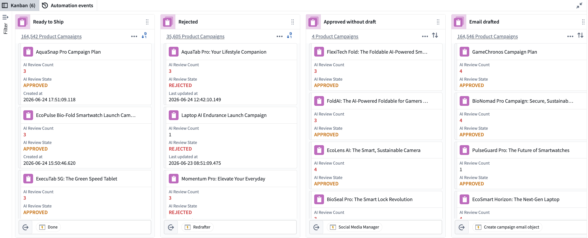
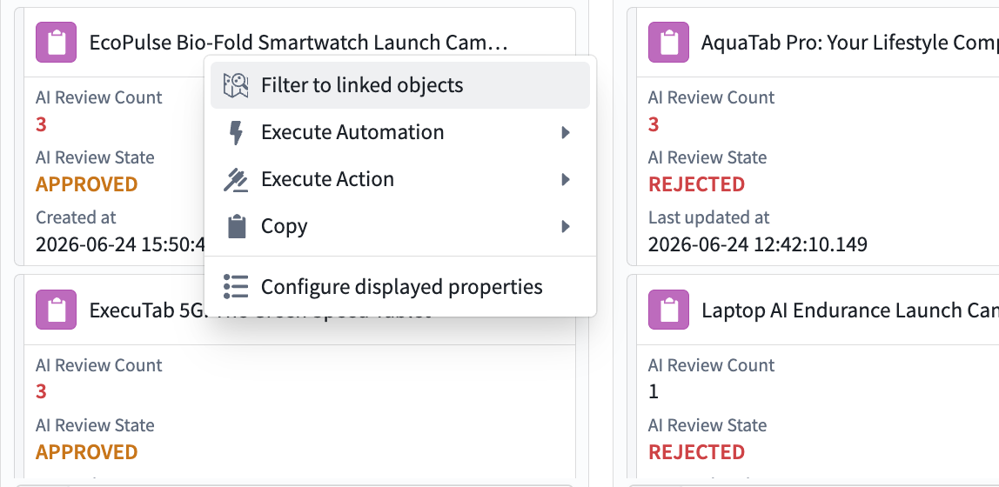

Autopilot
Autopilot is your control center for managing Ontology automation workflows at scale. It enables teams to visualize, monitor, and optimize complex systems while troubleshooting issues in real time.

Capabilities
Autopilot has two main tabs for managing your automation workflows:
- Workbench: Visualize your workflow using Kanban boards and dependency graphs, monitor object states, and interact with your automation system.
- Automation events: View detailed execution logs, trace automation runs, and troubleshoot issues across your entire workflow.
:::callout{theme="warning"}
Workflows with a high number of automations may increase memory usage and cause browser performance issues.
:::
Visualize complex agentic workflows
The Workbench provides coordinated views for understanding your automation workflows:
- Kanban boards display your state machine, where each card represents a single object in a given state.
- Dependency graphs display all system components, including automations, actions, functions, logic functions, and their relationships.

Monitor system performance and debug issues in real time
- Track automation event failures at the object level to quickly triage problematic event executions.
- Explore object details, view an object's edit history with resource attribution (automation, workshop, actions), and filter your workbench to all linked objects for a given object.
- Use workbench search (
Cmd+F for macOS and Ctrl+F for Windows) to find any object by title or resource identifier (RID).

- View the liveness of your system; see which automations are currently executing and on which objects.
- Follow the entire lifecycle of an automation with detailed telemetry.
- Manually retry automations on any object.
- Modify automation conditions directly within Autopilot.